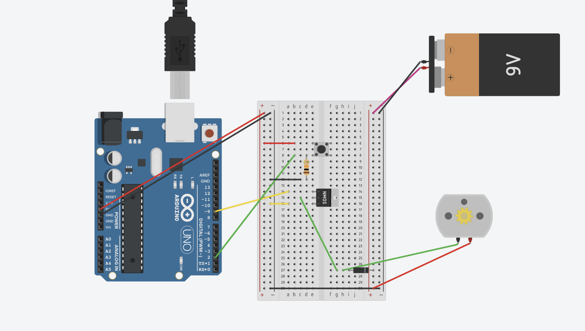

Arduino HW 9 - Motorized Pinwheel
IGME 470
The Motorized Pinwheel assignment is our first time working with motors and external power sources in the Arduino course. This project introduces the concept of using a 9V battery to power a DC motor, which spins a pinwheel when a button is pressed.
This assignment is important because it teaches us how to work with higher-power components that can't be powered directly by the Arduino's 5V output. By using a transistor to control the motor and an external battery for power, we learn the fundamentals of motor control and power management.
The parts used:
- 1x DC Motor
- 1x Pushbutton
- 1x 9V Battery
- 1x Transistor (to control the motor)
- 1x Diode (to protect against back EMF)
- Resistors

The circuit works by using the Arduino to read the button state. When the button is pressed, the Arduino sends a signal to the transistor, which acts as a switch to allow current from the 9V battery to flow through the motor. The diode protects the circuit from the back EMF (electromagnetic force) that motors generate when they stop spinning.
When the button is released, the motor stops spinning. This simple on/off control demonstrates the basic principles of motor control that are used in more complex projects like robots and automated systems.